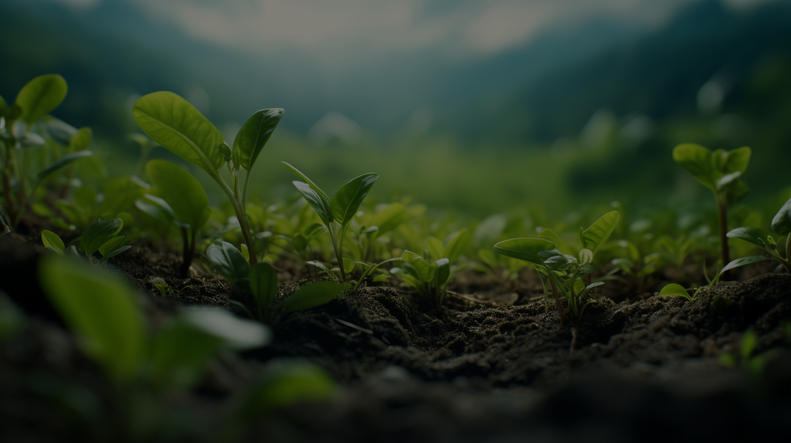

Applications of Remote Sensing in Agriculture
Table of Contents
Introduction
Remote sensing, the science of obtaining information about objects or areas from a distance, has revolutionized modern agriculture. By using satellite imagery, drones, and other remote sensing technologies, farmers and researchers can monitor crops, manage resources, and improve yields more efficiently than ever before.
1. Crop Health Monitoring
One of the most significant applications of remote sensing in agriculture is crop health monitoring. Using multispectral and hyperspectral imaging, farmers can detect early signs of disease, nutrient deficiencies, or pest infestations. For example, the Normalized Difference Vegetation Index (NDVI) is a widely used remote sensing technique to assess plant health by measuring the reflectance of visible and near-infrared light.
Figure 1: Satellite image showing NDVI values for crop health assessment.
2. Precision Agriculture
Precision agriculture relies heavily on remote sensing to optimize the use of resources such as water, fertilizers, and pesticides. By analyzing data collected from satellites or drones, farmers can create variable rate application maps. These maps guide machinery to apply inputs only where needed, reducing waste and environmental impact.
Figure 2: Drone capturing field data for precision agriculture.
3. Soil Analysis
Remote sensing is also used to analyze soil properties, such as moisture content, texture, and organic matter. This information helps farmers make informed decisions about irrigation and soil management. For instance, thermal imaging can identify areas of a field that are too dry or too wet, enabling targeted irrigation.
Figure 3: Thermal image showing soil moisture variations.
4. Yield Prediction
By combining remote sensing data with machine learning algorithms, farmers can predict crop yields with high accuracy. This information is invaluable for planning harvests, managing supply chains, and making financial decisions. Satellite imagery can track crop growth stages and estimate yields based on historical data and current conditions.
Figure 4: Satellite image used for yield prediction modeling.
5. Disaster Management
Remote sensing plays a critical role in managing agricultural disasters such as droughts, floods, and storms. By monitoring weather patterns and environmental changes, farmers can take proactive measures to protect their crops. For example, early warning systems using satellite data can alert farmers to impending droughts, allowing them to implement water-saving measures.
Figure 5: Satellite image showing drought-affected regions.
Conclusion
Remote sensing has become an indispensable tool in modern agriculture. From monitoring crop health to predicting yields and managing disasters, it offers a wide range of applications that help farmers increase productivity and sustainability. As technology continues to advance, the potential for remote sensing in agriculture will only grow, paving the way for smarter and more efficient farming practices.
Enjoyed this article? Explore more blogs or give your feedback for this article
Contact Us
Email: contact@geoma.in